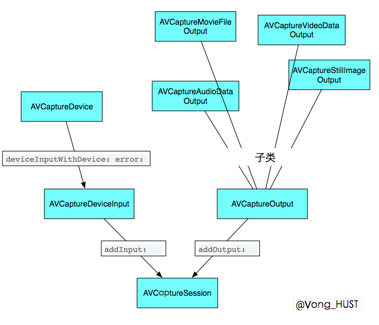

最近在做视频相关的东西，然后熟悉了一下AVFoundation框架，以及强大的开源库GPUImage。在这里记录这个过程中遇到的一些问题，以及解决的方法。
AVFoundation的一些基本概念
根据苹果的官方文档，AVFoundation是用来播放和创建实时的视听媒体数据的框架，同时提供Objective-C接口来操作这些视听数据，比如编辑，旋转，重编码。本文着重讲的是视频的录制和编辑和GPUImage的一些简单使用，其他的都是一笔带过。来看下苹果文档的一个框架图。
相关类
- AVAsset
- AVAssetTrack
- AVComposition
- AVVideoComposition
- AVAudioMix
- AVMutableAudioMixInputParameter
- AVMutableVideoCompositionInstrution
- AVMutableVideoCompositionLayerInstrution
简单的播放可以使用MPMoviePlayerController或者MPMovieViewController就行,简单的录
制可以直接使用UIImagePickerController。同样简单的声音播放直接使用AVAudioPlayer，简单的录制直接使用AVAduioRecorder。如果你想要有更多的操作，可使用各种复杂的方式来控制播放，比如在同一时刻为同一个asset的不同片段使用不同的分辨率渲染，playitem来管理asset的呈现状态和方式,playitemtrack管理asset中的轨道（track）状态。
在AVFoudation框架中最核心的类就是AVAsset，他是由一系列的媒体数据组成的，包括但不限于:时间、大小(size)、标题、字幕等。其中每一个单独的媒体数据称为轨道(track)。同样剪辑操作中，AVMutableComposition是一个核心类。
这里又一个重要的东西就是CMTime,它是一个结构体，定义如下:
typedef struct
{
CMTimeValue value;
CMTimeScale timescale;
CMTimeFlags flags;
CMTimeEpoch epoch;
} CMTime;
通常时间是等于value/timescale的，所以两个有相同时间的CMTime它们的timescale并不一定相同。关于更多CMTime的内容可以看这里。
进阶
视频的录制
这里用的是系统原生录制,关于录制通常用到的几个类就是AVCaptureDevice、
AVCaptureSession、AVCaptureDeviceInput、AVCaptureOutput,同样，来看一张图。

一般来说，如果你想修改视频的相关信息，如拍摄地点等，可以拿到output的metadata来修改。大致代码如下:1
2
3
4
5
6
7NSMutableArray *array = [output.metadta mutableCopy];
AVMutableMetadataItem *item = [[AVMutableMetadataItem alloc] init];
item.keyspace = ...;
item.key = ...;
item.value = ...;
[array addObject:item];
output.metadata = array;
如果录制时候想要得到指定的视频size必须先指定分辨率，像这样1
2
3
4
5
6
7if ([session canSetSessionPreset:AVCaptureSessionPreset640x480]){
session.sessionPreset = AVCaptureSessionPreset640x480;
}
else {
//设置失败
}
切换摄像头或其他输入源必须在beginConfiguration和commitConfiguration之间来处理，大致是这样1
2
3
4
5
6[session beginConfiguration];
//移除某个输入源
//再添加某个输入源
//再为新添加的输入源进行必要的相关设置
//...其他操作
[session commitConfiguration];
如果想对实时视频帧进行相关的渲染操作,通过 setSampleBufferDelegate:queue:方法来为output设置代理，同时必须指定queue，代理方法将会在这些queue上面被调用。可以在自己的类里面实现AVCaptureVideoDataOutput的协议方法,通过实现 captureOutput:didOutputSampleBuffer:fromConnection:来拿到视频的每一帧，默认情况下这些视频帧会被用最有效的格式来输出到output,当然也可以在拍摄之前就为output进行相关设置。
1 | AVCaptureVideoDataOutput *videoDataOutput = [AVCaptureVideoDataOutput new]; |
说了这么多，感觉很虚，还是直接上代码，将以上部分衔接起来
1 | //自定义方法，小演示只添加了视频，没有添加声音，添加声音类似 |
上面演示了如何取得每一帧实时画面,如果想要直接存成视频可使用AVCaptureMovieFileOutput,如下1
2
3
4
5
6AVCaptureMovieFileOutput *movieFileOutput = [[AVCaptureMovieFileOutput alloc] init];
NSURL *fileURL = ...; //存放位置
//指定代理
[aMovieFileOutput startRecordingToOutputFileURL:fileURL recordingDelegate:delete];
//也可以为其指定outputSettings
同样代理必须实现协议方法captureOutput:didFinishRecordingToOutputFileAtURL:fromConnections:error:,
当然还有其他各种具体的设置，如对焦、曝光、闪光灯以及白平衡等等均可以通过KVO来设置，每次设置前都加一个判断，是否支持指定模式,在这里不做详细叙述了,这里你可以看到更多。
视频的剪辑
视频的剪辑包括但不限于:裁剪、旋转(改变transform)、添加水印、添加字幕、合并等。关于剪辑，无非就是取出视频中的轨道(视频和音频),然后对轨道进行一系列的操作变可以得到各种想要的效果。首先我们先来看下面一张图
AVMutableComposition是整个视频剪辑过程中的一个核心，下面着重讲解这个类。AVMutableComposition和AVAsset一样含有多个视/音频轨道，但是更重要的是，它可以将多个AVAssetTrack合并到一起，比如在视频合并时，可以直接将多段视频拼接到一个轨道(AVMutableCompositonTrcak)，音频也一样。通过借助AVMutableVideoComposition和AVMutableAudioMix来设置每一段的视/音频的属性，从而达到想要的视听效果，比如视频切换处的淡入淡出，声音的渐变，字幕等等。
关于上图的解释:首先通过将asset里面的轨道加载到composition的各轨道，然后通过audioMix和videoComposition对某个轨道进行对应操作,设置其相关属性。其中要用到的具体方法可以参见这里。
其中图中1，2，3用到的方法为1
2
3
4
5
6[1]
[mutableComposition addMutableTrackWithMediaType:AVMediaTypeVideo preferredTrackID:kCMPersistentTrackID_Invalid]
[2]
[AVMutableAudioMixInputParameters audioMixInputParametersWithTrack:mutableCompositionAudioTrack];`
[3]
[AVMutableVideoCompositionLayerInstruction videoCompositionLayerInstructionWithAssetTrack:mutableCompositionVideoTrack]
关于视频的剪辑的代码可以参见苹果给出的官方Demo以及Raywendrich上的两篇文章1,2。
GPUImage
什么?!你没听说过GPUImage?!那你赶紧去看看它的相关介绍。GPUImage是一个基于OpenGL ES的一个强大的图像/视频处理库,封装好了各种滤镜同时也可以编写自定义的滤镜。至于他到底是如何强大,用了就知道。在这篇文章不是为了介绍它，而是列出一些我在使用过程中遇到的问题和解决方法。
什么?!你没听说过GPUImage?!那你赶紧去看看它的相关介绍。GPUImage是一个基于OpenGL ES的一个强大的图像/视频处理库,封装好了各种滤镜同时也可以编写自定义的滤镜。至于他到底是如何强大,用了就知道。在这篇文章不是为了介绍它，而是列出一些我在使用过程中遇到的问题和解决方法。
分段录制
在使用GPUImageVideoCamera来录制的时候,可能需要分段录制,在GPUImage给出的视频录制Demo中直接只是录制一次，然而有时候需求可能是要录制多次，如果此时按照Demo的方法每次录制都要创建一个movieWriter,这样子的话每次都会在重新创建movieWriter并将它设置为videoCamera的audioEncodingTarget时候，界面都会卡顿一下，这是什么原因呢？因为videoCamera默认是不录制声音的，而每次创建movieWriter的时候都用到了movieWriter.hasAudioTrack = YES;,吊用这个之后videoCamera会自动去添加声音输入源,准备一些数据，所以这个过程会导致界面卡顿一下？这该怎么办呢？如果你有进到videoCamera的头文件去看的话你会发现这么一个方法和它的注释
1 | //Add audio capture to the session. Adding inputs and outputs freezes |
注释的大意是:录制的时候添加声音,添加输入源和输出源会暂时会使录制暂时卡住,所以在要使用声音的情况下要先调用该方法来防止录制被卡住。这不刚好就解决了上面的这个问题吗？所以问题就迎刃而解了,因为没看到这个,走了不少弯路,浪费了好长时间。
关于分段录制,可能有这么一个需求就是所有片段都是存于一个文件中而不是录制完成后将各段合并到一个视频文件中。这两个东西或许会帮到你分段录制的实现,GPUImageExtend。前者是基于系统的分段录制的实现,后者是GPUImageMoiveWriter的一个子类。
所见即所得
在录制的时候,使用GPUImageView来显示,因为给GPUImageView设置的大小是320*320的,如果不设置它的填充模式(fillMode)它是默认使用kGPUImageFillModePreserveAspectRatio即保持长宽比,其余空白处使用背景色填充,如果要设置成方形就得使用kGPUImageFillModePreserveAspectRatioAndFill,但是这个时候问题又来了假设你是用的录制分辨率是960x540,显示的画面则只会显示中间的540x540的画面,这个时候如果movieWriter的size设置为540x540,则最后保存的视频是失真的因为960被压到了540，整个画面变扁了。这个时候有两种解决方案
1.使用GPUImageCropFilter,通过设置其cropRegion来裁出中间540x540部分。关于cropRegion要注意它是一个CGRect,它对坐标系做了一个归一化处理,所以让所有的取值都在0.0~1.0范围内,比如960x540裁剪至中间540x540部分则cropRegion为(0,((960-540)/2)/960,1,540/960)
2.改变videoComposition的perferTransfom使其只显示中间的540x540。
这样就完成了所见即所得。
关于GPUImage的实时滤镜添加或给已存在的视频添加滤镜,Demo都给出了详细过程,依葫芦画瓢即可。有一点要注意的是,在一些操作完成的时候注意removeTarget,还有就是在使用movieFile来播放已存在视频并添加滤镜的时候是没有声音的,这是这个库的一个缺陷,Github上有人提了这个issue和一些解决办法。同时在用movieFile处理视频的时候在切换滤镜的时候最好先cancelProcessing不然会有黑屏或卡顿现象出现。同样如果你是用老版本的GPUImage的时候,可能会遇到第一帧是红色的现象,有人提出这个issue后,作者修复了这个bug,切换到最新版的时候就不会有这种情况发生。发生这种情况的原因是视频掉帧,导致音频和视频不同步。
总结
AVFoundation还是有很多东西去做深层次的挖掘,GPUImage也是一样,有了这个强大的库,解决一些事情节省了大量时间。这次仅仅是一个小小的尝试,对于很多东西都是浅尝则止,文中难免会有错误,欢迎在评论中指正。如果你在使用GPUImage和AVFoundation有什么好的心得或者对一些问题有相应的解决方案,不妨在评论中分享一下。